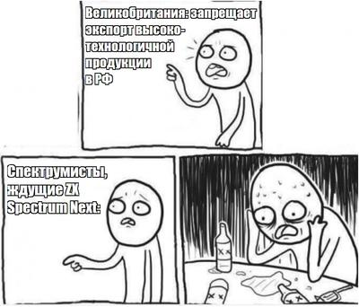
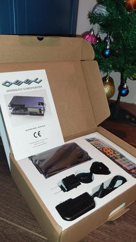
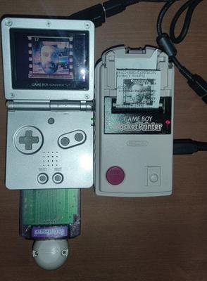
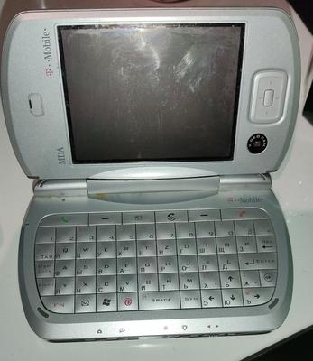

Новости санкций
Новости санкций
{kind=link}


Новости санкций

8-bit guy начал давно анонсированную серию видео про Амигу. Первый видос - про Амигу 1000! Оказывается, на старте она стоила аж в пять раз дешевле мало что умеющего в те годы гроба IBM PC/AT.
https://www.youtube.com/watch?v=kjapiUQOi2s
Новости от команды ZX Spectrum Next.
Из-за дефицита FPGA семейства Xilinx Spartan-6 они решили переехать на более свежее семейство Xilinx Artix-7. Конкретная модель чипа не уточняется, но вероятно это XC7A25T. Несмотря на то, что новая микросхема в два раза более емкая и в пять раз более быстрая, ребята божатся, что не собираются ломать совместимость со старыми ревизиями ZX Spectrum Next.
Но мы-то знаем, как оно бывает, поэтому готовимся через несколько лет встречать ZX Spectrum Next 3 с Z80 на 100 МГц 😏
https://www.kickstarter.com/projects/spectrumnext/zx-spectrum-next-issue-2/posts/3364778
С новым годом, друзья! Пусть всё задуманное исполняется на изичах за две недели! 🥳
Нашёл под своей ёлочкой OSSC. А к вам заглянул ретро-дед Мороз?

Геймбоевский принтер лежит у меня давно. А вот кабель к нему — редкая вещь, пришлось заказывать из Японии и ждать почти полгода. Но результат забавный. Такой полароид для бедных: тоже моментальные снимки, — но с кучей ручных действий, в монохроме, и размером с фалангу большого пальца.
Знал бы я в 90-е, что такие штуки вообще бывают — изошелся бы слюной от вожделения. В принципе, комплект из геймбоя, принтера и камеры и стоил-то немного — меньше 200 баксов. Ну, по западным меркам немного — у нас-то это средняя месячная зарплата в те годы. Так что прошла мимо нас эта тема, да и вообще всё величие геймбоя мимо прошло.
Печатаю на чеках, потому что родная бумага совсем выцвела. Нужно будет найти бумагу для факса и обрезать в ширину.

https://tass.ru/ekonomika/13163425
Умер Масаюки Уэмура, возглавлявший отдел Nintendo R&D2 в эпоху расцвета консолей. Они разработали не только Фамиком и Супер Фамиком (NES и SNES), но и более старые консоли первого поколения (Nintendo TV-Game, являвшие собой клоны понга и подобного), и некоторые знаковые видеоигры - например, Donkey Kong.
С одной стороны, конечно, нам обидно, что клоны Фамикома если и не убили, то загнали в андеграунд российский спектрумизм. Но с другой, это тоже важная часть нашей истории. И уж точно важнейшая часть современной ретро-сцены.
RIP
В нашем антимузее компьютеров в Екатеринбурге ремонтируют Кворум. Свелось к замене БП, но всё равно интересно.
Ребзя возвращают нам наш 1998-й. Всё серьёзно - оригинальный "Кузя" (Hugo) на Амиге 500, вместо джойстика декодер DTMF и немного мелкой логики, принимающий управление через телефонную линию с настоящего телефона.
https://www.youtube.com/watch?v=vaeAuJAJmKs
Смотрите, какую красоту купил вчера на блошином рынке. T-Mobile MDA Pro на винмобайл 5. 520 МГц, 64 Мб RAM, 640x480, 3G. Просто топовый коммуникатор 2005 года. Без контракта на старте стоил около $1200. Сейчас на авито аналоги (Qtec 9000) от 4500 рублей. Я сторговался за 300.
Но тут нет батарейки, а напрямую от БП работать не хочет. Надо как-то решать. В принципе, было бы забавно восстановить его и портировать туда мой древний эмулятор для PocketPC — PocketSpeccy.

Очередной ролик от Кинамании про музыку из игр. Там про Тима Фоллина есть! Кто не в курсе, один из крутейших музыкантов на Спектруме. И не только на Спектруме.
https://www.youtube.com/watch?v=GkwsGLcDxns
{kind=link}
{kind=link}
{kind=link}